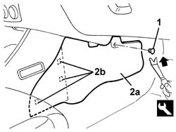

7040A65 PASSENGER COMPARTMENT BOX LOCK , ONE , R R
- Path
- Procedures > 70 FITTINGS > 7040 BODYSHELL INTERIOR TRIMS AND FITTINGS > 7040A PASSENGER COMPARTMENT TRIM > 7040A65 PASSENGER COMPARTMENT BOX LOCK , ONE , R R
- Kind
- repair procedure (removal / refitting; the operation number is the code)
- Applies to
- all engines; all production periods
- Interactive page
- https://sloeber94.github.io/elrnDB-aGt/en/#/125001860
Applies to: all engines; all production periods
 Removing
Removing
 Refitting
RefittingMove the seat back completely.
1. Undo the retaining buttons using the special tool
 | Name | Country |
|---|---|---|
1 | Scraper blade | 1.823.015.000 |
2. Remove the console side closure (2a), disengaging it from the inner retainers (2b).

Applies to: all engines; all production periods
Refitting
RemovingCheck that the console side closure is not damaged.
Position the console side closure and engage the inner retainers.
Engage the retaining button.
Return the seat to the correct position.
Topics that link to this page (22)
- 3350E30 LATERAL ACCELERATION AND YAW SENSOR R R
- 5010B45 DUCT FROM CLIMATE CONTROL SYSTEM - R R
- 5010B56 DUCT BETWEEN CLIMATE CONTROL SYSTEM HOUSING AND AIR DUCT TO REAR SEATS R R
- 5010D28 UPPER MIXED AIR TEMPERATURE SENSOR (1), LH OR RH R R FOLLOWING ELECTRICAL CIRCUIT CHECK
- 5040A80 EXPANSION/CONNECTION PIPE - R R
- 5040B30 EXPANSION VALVE (TUBE ORIFICE) - R+R
- 5040C50 AIR CONDITIONER HEATER RADIATOR - R+R
- 5040C64 A/C MANUAL CONTROL SWITCH (ONE) - R+R
- 5040D76 AIR CONTITIONER DISTRIBUTION FLAP CONTROL MOTOR - R R
- 5040D84 AIR CONDITIONER LEFT HAND AIR MIXER FLAP CONTROL MOTOR - R R
- 5040D86 AIR CONDITIONER RIGHT HAND AIR MIXER FLAP CONTROL MOTOR - R R
- 5040D90 AIR CONDITIONER SYSTEM WIRING BUNDLE - R R
- 5505C34 INTERGRATED INSTRUMENT UNDER FACIA FRONT AIR BAG WIRING - R R
- 5505C41 CABIN WIRING - R R
- 7040A10 L/H OR R/H FRONT SEAT (ONE) - R+R
- 7040A95 REINFORCEMENT BRACKET ONE LH OR RH BETWEEN FACIA SUPPORT BEAM AND BODY R R
- 7040A97 FACIA TRIM SUPPORT BEAM - R R
- 7040L10 CABIN FLOOR CARPET - R R
- 7040L13 PASSENGER COMPARTMENT FLOOR SOUNDPROOFING - R R
- 7040L20 TUNNEL TRIM - R R
- 7065C72 FRONT CIGAR LIGHTER SOCKET/POWER POINT - FASTEN
- 7065C73 CIGAR LIGHTER BULB - R R - INCLUDES R R CIGAR LIGHTER